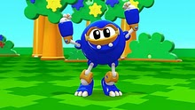

Mi niña ♥
Catherine Bianey (mi niñita)
Esta niña hermosa su pasatiempo favorito es leer novelas para ponerse a chillar ^^ pero despues de que pasa eso se va
a su camita a ver "mecanimales."

Este, es Sasquatch, su mecanimal favorito
no hay ninguno como él, lo ama con toda su alma más que a mi pipipi.
Una niña demasiado alegre, cariñosa, comprensiva, en fin todo lo que tiene una chica de un cuento.
Ella es mi adoración, la niña de mis ojos, mi muñeca, mi princesa, mi reina, mi bibí, mi pastelito, mi corderito, la niña que voy a cuidar con toda mi alma.♥
Que más podria decir de ella, es la chica perfecta ♥